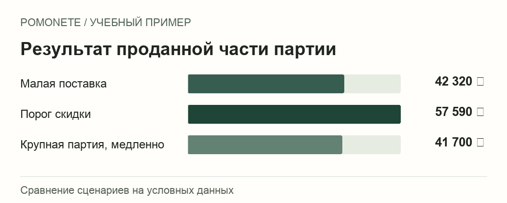

Скидка поставщика за объём. Считаем деньги селлера Яндекс Маркета
Как сравнить большие партии по вкладу при разной закупке, хранении и оборачиваемости.
На Яндекс Маркете продавец акриловых крышек получает ступенчатую скидку при увеличении заказа. Поставщик показывает экономию на покупке. Селлеру полезно посмотреть результаты для проданной части, будущий остаток и деньги до точки, когда оборачивается следующая партия.
Что входит в сравниваемый период
Выберите горизонт наблюдения, достаточно длинный для продажи существенной части запаса. Разделите деньги, вложенные в закупку, и себестоимость проданных единиц. Добавьте хранение и доплату за обработку крупной партии. Остаток покажите на отдельной строке в штуках и по закупочной стоимости.
Чтобы пересобрать расчёт «Результат проданной части партии» для своего магазина, перенесите в него исходные числа. В формуле A обозначает «доход с единицы после услуг, ₽», B обозначает «закупка единицы, ₽», C обозначает «продано в окне», D обозначает «хранение и обработка партии, ₽». Удельную разницу умножают на количество. Последняя величина относится ко всему сценарию и учитывается один раз. Запишите рядом период и охват каждого среза. Если для одной строки известна только оценка, оставьте пояснение непосредственно рядом с ней: по итоговой цифре источник уже не восстановить.
Результат проданной части партии = (A − B) × C − D
| Условие | Доход с единицы после услуг, ₽ | Закупка единицы, ₽ | Продано в окне | Хранение и обработка партии, ₽ | Результат проданной части партии |
|---|---|---|---|---|---|
| Малая поставка | 1 540 | 1 060 | 94 | 2 800 | 42 320 ₽ |
| Порог скидки | 1 540 | 950 | 111 | 7 900 | 57 590 ₽ |
| Крупная партия, медленно | 1 540 | 890 | 86 | 14 200 | 41 700 ₽ |

В сценарии «Малая поставка» в формулу подставляем доход с единицы после услуг, ₽ = 1 540, закупка единицы, ₽ = 1 060, продано в окне = 94, хранение и обработка партии, ₽ = 2 800. Получается 42 320 ₽. При прежней цене закупки запас почти распродан к плановой дате проверки.
В сценарии «Порог скидки» в формулу подставляем доход с единицы после услуг, ₽ = 1 540, закупка единицы, ₽ = 950, продано в окне = 111, хранение и обработка партии, ₽ = 7 900. Получается 57 590 ₽. Цена партии ниже, но часть товара лежит дольше обычного.
В сценарии «Крупная партия, медленно» в формулу подставляем доход с единицы после услуг, ₽ = 1 540, закупка единицы, ₽ = 890, продано в окне = 86, хранение и обработка партии, ₽ = 14 200. Получается 41 700 ₽. Дополнительный размер скидки сопровождается большей нагрузкой на хранение.
Если «Малая поставка» взять за исходную точку, «Порог скидки» меняет показатель «результат проданной части партии» на 15 270 ₽, а «Крупная партия, медленно» на -620 ₽. Между двумя последними строками разница составляет -15 890 ₽ при вычитании второй из третьей. Смотрите, какой именно вход изменился между строками. Если менялись объём и условия одновременно, итог сравнения относится ко всему сочетанию.
Запишите отдельно результат по обычным условиям «Малая поставка» (42 320 ₽) и результат по уточнённым условиям «Крупная партия, медленно» (41 700 ₽). Если обе оценки получились по одному правилу, следующий вопрос касается исходных данных. Проверьте, сохраняется ли направление сравнения, если вернуть одно нестабильное условие к исходному. Сценарии полезно привязывать к операционному событию, по которому можно проверить, что новый режим действительно произошёл.
Почему самая дешёвая закупка может проиграть
Запас может занимать место, которое требуется для более ходовых товаров. Если цена на витрине затем снижается, старые вложения не исчезают. Уточните сценарий падения спроса и правила возврата у поставщика. При таком сценарии расчёт на горизонте закупки важнее рекламной скидки.
Проверьте переход от первичной записи до показателя «результат проданной части партии». Колонки «доход с единицы после услуг, ₽, закупка единицы, ₽, продано в окне, хранение и обработка партии, ₽» могут поступить разными путями. Пройдите пример, где дата и сумма видны в исходнике, до последней строки. Для этого подойдут экономика заказов и собственная закупочная ведомость. Затем возьмите один случай с исключением и убедитесь, что результат можно восстановить по сохранённому правилу.
Выгрузка маркетплейса даёт начисления по операциям. Собственную стоимость закупки, труд и расходники подставляют из учёта магазина с датой действия. Для решения по ассортименту разделите повторяющиеся переменные расходы, затраты на запуск и текущие фиксированные расходы команды. После изменения предложения обновляются и продажи соседних изделий. Счёт по одному товару имеет смысл дополнить итогом той группы, между вариантами которой может переключиться покупатель.
Что сильнее всего меняет результат
Для «результат проданной части партии» начнём с результата 57 590 ₽. В «Порог скидки» условно меняем «доход с единицы после услуг, ₽», «закупка единицы, ₽», «продано в окне», «хранение и обработка партии, ₽» по очереди. Шаг округляем до целой исходной единицы около 10%. Сравнение относится к одной строке расчёта. При сильной сезонной смене его полезно повторить и на второй базе с другим доступным объёмом.
- «Доход с единицы после услуг, ₽» меняется с 1 540 на 1 694. При прежних остальных входах получается 74 684 ₽, сдвиг составляет 17 094 ₽.
- «Закупка единицы, ₽» меняется с 950 на 1 045. При прежних остальных входах получается 47 045 ₽, сдвиг составляет -10 545 ₽.
- «Продано в окне» меняется с 111 на 122. При прежних остальных входах получается 64 080 ₽, сдвиг составляет 6 490 ₽.
- «Хранение и обработка партии, ₽» меняется с 7 900 на 8 690. При прежних остальных входах получается 56 800 ₽, сдвиг составляет -790 ₽.
Самый заметный эффект дали данные по «доход с единицы после услуг, ₽»: 17 094 ₽. Подготовьте второй тест с двумя входами, которые обычно меняются вместе. Сравните его с одиночной подстановкой. Различие покажет, хватит ли следить за одной строкой при выбранном действии или в отчёте понадобится связанная пара наблюдений.
Если единичный товар недорог, складские расходы на четыре недели легко скрыть в общих затратах магазина. Разнесите хранение между нужными партиями по занимаемому объёму и времени. После окончания горизонта можно проверить, сколько фактически стоило сохранение лишнего запаса.
Как согласовать следующий заказ
Выберите партию, у которой есть достаточно денег на следующую закупку и понятный срок выхода остатка. Посмотрите эффект от деления поставки на два прихода. При возможности согласовать цену за общий объём без раннего размещения на складе сравните этот вариант отдельно.
Поставьте рядом плановую и фактическую строки сделки с сохранённой себестоимостью. Проверку удобнее начинать с позиций, на которые приходится основной вклад, потом выделять случаи с нестандартной логистикой, возвратом или разовой скидкой. Если после смены состава продаж средняя величина улучшилась, восстановите исходные веса и оцените, сколько прироста действительно получилось на сопоставимых позициях.
При еженедельной сверке поставьте рядом сценарий «Крупная партия, медленно» и реально наблюдавшееся значение. Если оценка стала систематически расходиться с результатом, назовите источник и предложите измерение меньшего масштаба. Для селлера Яндекс Маркета такой шаг важен, когда тот же показатель собирают разные сотрудники или несколько складов.